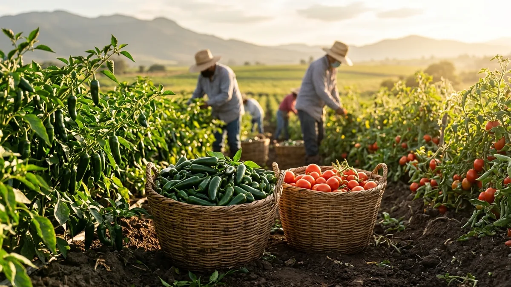

El sabor que despierta el antojo de Baja California en minutos.
Ingredientes seleccionados del campo mexicano y envasados al vapor para preservar su textura crujiente, aroma de comal y picor exacto sin aditivos artificiales.
- 12+ Recetas Catálogo anidado con ingredientes de Tijuana
- 10 a 25 min Recetas caseras listas al instante
- CSS Scroll-Snap Carrusel nativo con 0 bloqueo de hilo principal

Carrusel de Descubrimiento Sensorial
3 platillos insignia de carga instantánea con scroll-snap-type: x mandatory y conexión directa a Calimax Tijuana.
Despensa Esencial La Costeña®
Catálogo migrado 100% a formatos .avif y .webp con atributo nativo loading="lazy".
Respuestas Directas sobre Conservas y Sazón (AEO)
Información estructurada para asistentes de voz, motores de búsqueda generativos y lectores de pantalla.
¿Cómo se conservan los chiles y vegetales La Costeña sin perder su frescura?
Los chiles, frijoles y elotes se seleccionan en el campo mexicano y se sellan herméticamente antes de pasar por un proceso térmico de esterilización al vapor que preserva su textura y nutrientes sin requerir conservadores sintéticos.
¿Qué diferencia de picor existe entre la Salsa Verde Mexicana y los Chipotles Adobados?
La Salsa Verde Mexicana ofrece un picor suave (~1,500–2,500 SHU) ideal para chilaquiles familiares, mientras que los Chiles Chipotles Adobados aportan un picor intenso y ahumado (~5,000–8,000 SHU) perfecto para tingas, camarones y marinados.